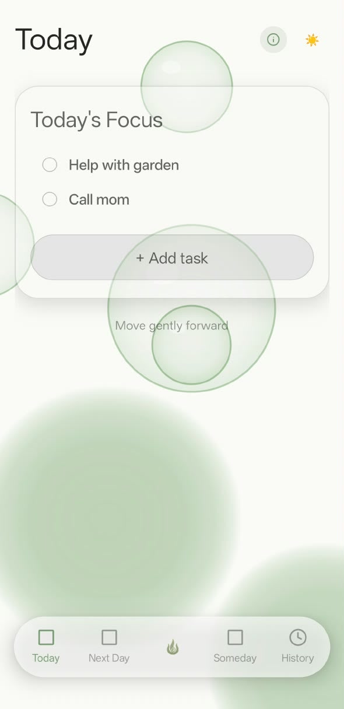
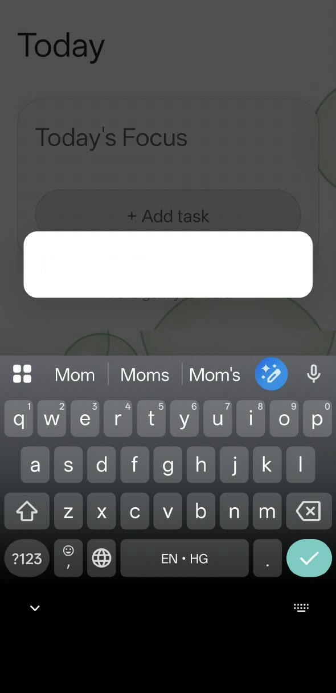
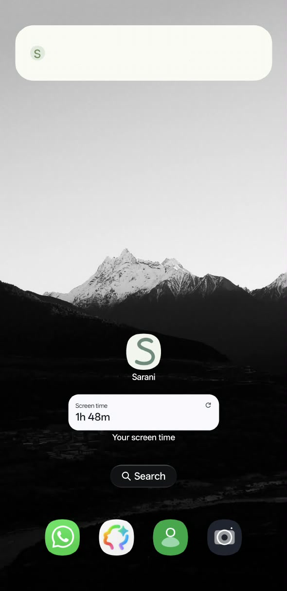
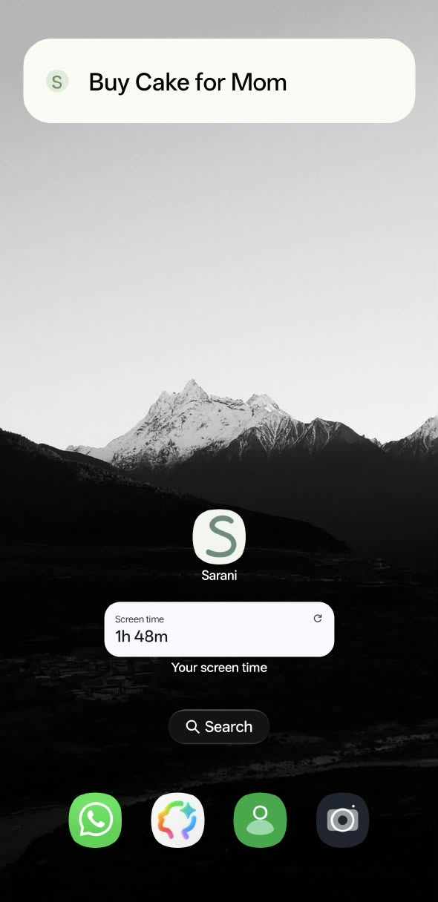

Not everything needs your attention.
Sarani
Capture it. Choose when it matters.
You choose what still matters.
The next morning.
Today’s Focus
Tomorrow
Press and hold the flame.
Kept where you’ll see it.
Sarani
From Attention to Intention.



